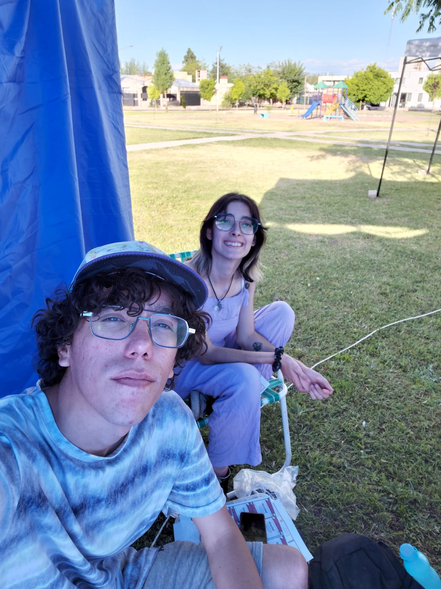

Nuestra Historia
Presentacion
Somos Mati y Juli, dos apasionados por la cultura geek y nuestra misión es poder facilitarles el acceso a productos de este increíble mundo. En Geek House creemos que cada objeto, cada figura y cada accesorio cuenta una historia y conecta con la imaginación de quienes disfrutan de la cultura pop. Nuestro objetivo es crear un espacio donde los fans puedan encontrar artículos únicos, de calidad y alineados con sus pasiones, desde clásicos del cine y las series hasta las últimas tendencias del gaming y el coleccionismo. Queremos que Geek House sea más que una tienda: un punto de encuentro para compartir experiencias, descubrir novedades y celebrar juntos este universo que tanto nos inspira.
Sobre nosotros
Somos una pareja dispuesta a comernos el mundo, uniendo nuestra pasión por la cultura geek y la creatividad para dar vida a Geek House. Creemos que los productos no son solo objetos: son símbolos de historias, aventuras y universos que nos inspiran día a día.

Nuestro sueño es construir una comunidad donde cada fan encuentre un espacio para compartir, descubrir y sentirse parte de algo más grande. Con dedicación y entusiasmo, trabajamos para acercarles lo mejor del coleccionismo, el gaming y la cultura pop, siempre con un toque personal y auténtico.